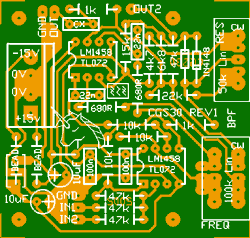
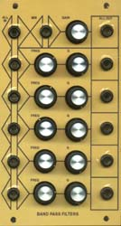
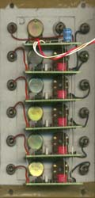

|
Band Pass Filter for music synthesizers.
This module is a simple bandpass filter with manually adjustable center frequency and Q. It is good for setting up artificial resonances for virtual instruments. Personally I find this sort of filter more interesting than the VCF, and as I needed a few more of them in my system I have produced this PCB.
A little on how it works:
The schematic of the Band Pass Filter. CX on the overlay is simply an optional part to allow easy conversion to an AC coupled output. If you chose to install a capacitor here, you will need to cut the track below the component.
Construction
The component overlay of the earlier version.

Before you start assembly, check the board for etching faults. Look for any shorts between tracks, or open circuits due to over etching. Take this opportunity to sand the edges of the board if needed, removing any splinters or rough edges. When you are happy with the printed circuit board, construction can proceed as normal, starting with the resistors first, followed by the IC sockets if used, then moving onto the taller components. Take particular care with the orientation of the polarized components, the electrolytics, diodes, and ICs. When inserting the ICs in their sockets, take care not to accidentally bend any of the pins under the chip. Also, make sure the notch on the chip is aligned with the notch marked on the PCB overlay. The VER1.3 board has provision for the addition of two 1206 SMT decoupling capacitors per chip. These are soldered on the track side of PCB between the pairs of "square", hole-less pads under each chip. I have allowed space on the PCB to mount 16mm pots directly on the PCB. There are two sets of holes to allow mounting at two different centers. Pots can be mounted off board if preferred or required (see below). IMPORTANT: In the first version of the PCB, the on-board resonance pot is wired as a "band width" control, i.e. in reverse to a standard resonance control. Rev 1 boards have this pot reversed, so that it behaves as a standard resonance pot. Pot centers are now at 1 inch. For the frequency pot I have specified a log pot on the PCB itself, though a linear pot will actually give a better response. It is specified as a C taper on the original diagram, which according to info just to hand, is a reverse audio (anti-log) taper in Japan.  The original unit uses LM1458 op-amps. My prototype uses TL072 op-amps. Notes:
Three BPF boards and a mixer cascaded to make a triple parallel filter. (The mixer PCB is slightly narrower than pictured.) It is possible to stack the band pass filter PCB. To make the multi-filter module, only the top board has the beads, 10uF decoupling capacitors and power connector inserted. On the remainder of the filter PCBs omit these parts.  The filter boards are then mounted one above the other with the fully stuffed board at the top. There are three holes directly under where one of the ferrite beads mounts for the power rails. Tinned copper wire busses can be run between the above mentioned holes, starting at the bottom board, and running right through each board in the stack until they reach the pads below the top PCB. They are soldered to each PCB, making sure on the top PCB that the wires do not poke though and contact the bead. Two other bus wires are required. One is run between all the pads marked IN1, the other between all pads marked OUT2. The IN1 bus is connected to a front panel jack. A signal fed into this jack will be fed to all filters in the stack at once. Jacks connected to the IN2 pads on each board will allow for signals to be fed into each individual filter. Feeding signals into the IN1 bus and an IN2 pad will result in the two signals being mixed in that filter. The bus wire connected between all of the OUT2 pads requires a little further processing. It should be wired to the signal node (virtual ground) of an op-amp summer. The D.C. Mixer is ideal for this. The virtual ground is marked as pad B. The output of the mixer can now be used as an all filter mixed output. The regular mixer inputs can be retained to allow extra signals to be mixed with the combined band pass filter outputs. Note: with the later CGS04 boards with 100k resistors marked on the overlay, the resistor marked with the asterisk (*) will need to be 47k. The other two can be 100k or 47k. It doesn't matter. The 6 input resistors are not needed as the 47k resistors are already on the bandpass filter boards.
Parts list This is a guide only. Parts needed will vary with individual constructor's needs. If anyone is interested in buying these boards, please check the PCBs for Sale page to see if I have any in stock. Can't find the parts? See the parts FAQ to see if I've already answered the question. Also see the CGS Synth discussion group.
Article, art & design copyright 2002 by Ken Stone
| ||||||||||||||||||||||||||||||||||||||||||||||||||